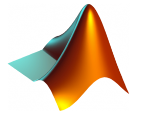

MY SKILLS
Technical Skills
Python
Advanced
MySQL

Intermediate
R
Basic
MatLab

Intermediate
HTML

Advanced
CSS

Intermediate
Non-technical Skills
My non technical skills include leadership skills which I have previously demostrated in team work projects. I have great interpersonal skills and values meaningful relationships. I am a critical thinker and good decision maker who is able to provide data driven solutions, and present and communicate found insight effectively for different audiences. Some of my technical skills are shown below.